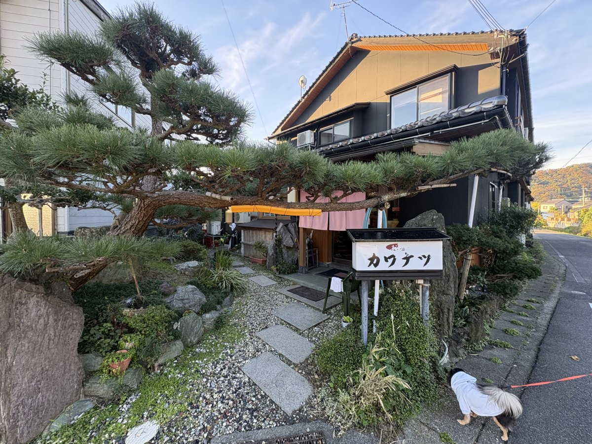
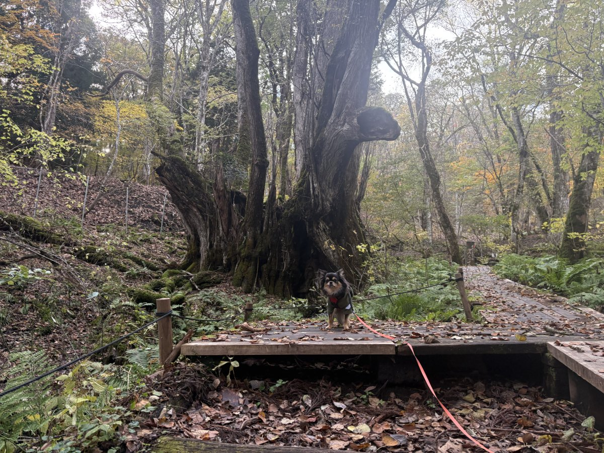

宿の外観と入口までの石畳
別館カワナツ
兵庫県美方郡新温泉町浜坂2854-1
駐車場
あり（無料）
トイレ
あり（洋式）
ドッグラン
なし
入場料
有料（宿泊料金はプラン・時期により変わるため予約サイトで確認のこと。小型犬の同宿は無料）
掲載時点の料金です。最新の料金は公式サイトでご確認ください。
小型犬のみ入場可（中型犬・大型犬は不可）
備考・犬連れでのポイント
浜坂温泉にある小さな温泉宿。小型犬と猫に限り（目安は10kg程度）、追加料金なしで同じ部屋に泊まれる。
ペット専用の宿ではなく犬連れでない客も泊まるため、客室と食事処以外では犬を抱っこすること。
客室は全室畳の和室。ペット用の設備は無いので、ケージ・フード・トイレなど犬用のものは持参のこと。
布団や座布団の上で犬を寝かせない決まり。犬を連れて行く時は予約の際に宿へ連絡が必要。
食事処は完全個室で、夕食・朝食とも犬を連れて入れるが、配膳でスタッフが出入りする時は犬から手を離さないこと。
料理はカニに力を入れていて、冬は浜坂漁港であがった松葉ガニのコースがある。
お風呂は浜坂温泉の天然温泉で、夜は22:30まで・朝は5:00から入れる（入湯税別途）。
チェックイン15:00〜・チェックアウト〜10:00。駐車場は無料で、台数は少なめ。
JR浜坂駅から徒歩約10〜15分、浜坂県民サンビーチまで歩いて数分。
最新情報は公式サイトで確認のこと。
運営者の訪問メモ
2026年11月11日に愛犬と訪問
運営者の愛犬、チワワのこつぶと1泊しました。夕食も朝食も個室の食事処で、こつぶも一緒に入れました。配膳で人が出入りするので、その間はこつぶから手を離さないようにしていました。
掲載情報の最終確認：2026年11月27日
このスポットに行った記事（ブログ）

西紀SAのドッグランと但馬高原植物園、浜坂の宿でカニ。兵庫・浜坂と城崎1泊2日の犬連れ旅（1日目）